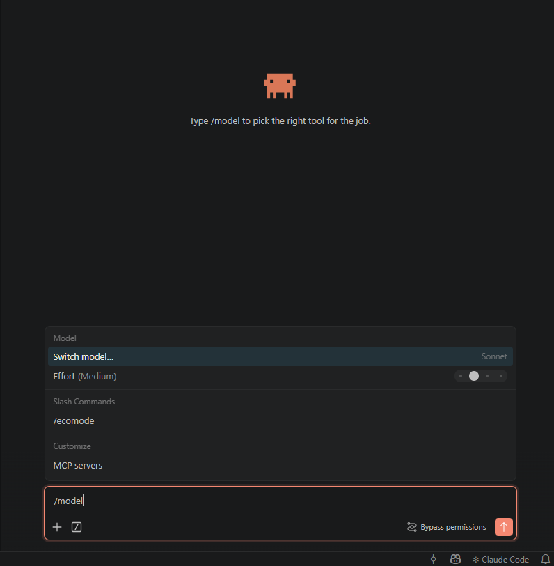
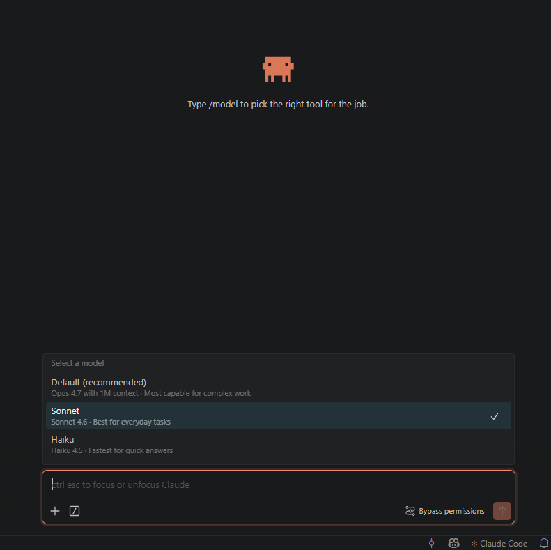
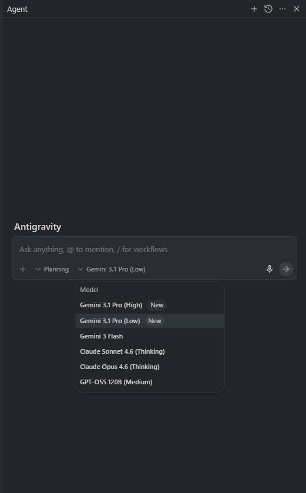
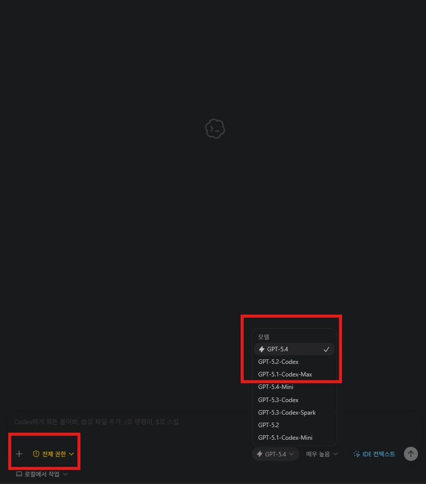

비개발자 바이브코딩 교육 — 2주차 실습 가이드¶
비개발자가 AI 코딩 에이전트와 대화하며 업무 자동화를 체험하는 실습 교육 위키입니다.
실습 구성¶
이 위키에는 3개의 실습 과정이 담겨 있습니다.
| 실습 | 주제 | 핵심 키워드 | 예상 시간 |
|---|---|---|---|
| 실습 1 | 모집요강에서 서비스 데이터 추출하기 | PDF 파싱, 표 추출, Excel 자동화 | 약 90분 |
| 실습 2 | 수학 교재 디지털화 작업 | 이미지 처리, 문제 잘라내기, 메타데이터 정리 | 약 85분 |
| 실습 3 | 이미지 공고 → 폼 변환 웹앱 만들기 | 멀티모달 LLM, FastAPI + Next.js, 동작하는 화면 | 약 90분 |
왜 3개인가¶
실습 1에서는 텍스트 기반 자동화(PDF 표에서 데이터 뽑기)를 경험합니다. 실습 2에서는 이미지 기반 자동화(PDF 페이지에서 문제 잘라내기)로 넘어갑니다. 실습 3에서는 한 칸 더 나아가, 자동화 도구를 그 자체로 매일 쓰는 작은 웹 화면까지 만들어봅니다.
데이터 형태는 다르지만, 핵심 루프는 같습니다:
- 내가 자료를 보고 규칙을 발견합니다 (관찰담)
- AI에게 규칙을 말로 설명합니다
- AI가 만든 결과를 눈으로 확인합니다
- 이상한 부분을 다시 말해줍니다
실습 1에서 이 루프를 텍스트로, 실습 2에서 이미지로 연습한 뒤, 실습 3에서는 같은 루프로 동작하는 웹앱을 시연 삼아 만들어봅니다. 실습 1·2가 "내 업무를 직접 자동화"였다면 실습 3은 "이런 형태의 일도 바이브 코딩으로 가능하다"는 체감 실습입니다.
공통 실습 흐름¶
실습 1·2는 동일한 5단계 프레임워크를 따릅니다. 실습 3은 시연 성격이라 단계를 3개로 압축한 변형 흐름이지만, 자료를 관찰하고 규칙을 말로 설명해 결과를 만든다는 핵심 루프는 같습니다.
flowchart LR
A["Stage 0\n일단 시켜보기"] --> B["Stage 1\n디테일 채워주기"]
B --> C["Stage 2\n자동화 설계"]
C --> D["Stage 3\n사람 확인"]
D --> E["Stage 4\nSkill화"]| Stage | 핵심 질문 |
|---|---|
| 0 | 지금 이 방식으로도 어느 정도 되나? |
| 1 | 어떤 규칙을 설명하면 더 좋아지나? |
| 2 | 왜 안 되는가, 어느 경로로 가야 하는가? |
| 3 | 실제로 맞는가, 반복 오류는 무엇인가? |
| 4 | 다른 입력에도 다시 쓸 수 있는가? |
오늘 가장 중요한 한 가지: 관찰담¶
관찰담이란
내가 자료를 직접 보면서 발견한 패턴이나 규칙을, AI에게 자연어로 설명해주는 것.
- 예: "문제 번호는 본문 글자보다 항상 크더라"
- 예: "이 표에서 셀이 병합돼 있으면 아래 줄도 같은 값이야"
코드를 쓸 필요 없습니다. 내가 눈으로 보고, 말로 설명하면, AI가 코드로 바꿔줍니다.
비개발자의 최대 무기는 도메인 지식입니다. AI는 코드를 잘 짜지만 "이 숫자가 뭘 의미하는지", "이 빈칸은 오류인지 원래 비어있는 건지"를 모릅니다. 그걸 알려주는 게 관찰담이고, 이 실습 전체에서 가장 많이 쓰게 될 스킬입니다.
실습 전 공통 준비¶
필수 준비물
- AI 코딩 에이전트 (Claude Code, Codex, Antigravity 등) 설치 및 기본 사용법 숙지
- Python 설치 완료
- 실습 폴더 구조 확인
💡 사용량 절약을 위한 모델 선택 (권장)¶
각 IDE의 최상위 모델은 구독 요금제의 사용량 한도를 빠르게 소진합니다. 실습 시간 동안 안정적으로 쓰려면 사용하는 IDE에 맞게 아래처럼 한 단계 가벼운 모델로 시작하세요.
Opus → Sonnet 으로 전환
Opus 4.7은 강력하지만 사용량이 금방 소진됩니다. 기본 설정이 Opus라면 실습 시작 전에 Sonnet 4.6으로 바꿔두는 것을 권장합니다.
-
프롬프트 창에
/model을 입력합니다.
-
뜨는 모델 목록에서 Sonnet을 선택합니다 (목록 옆에 체크 표시가 이동합니다).

Gemini 3.1 Pro (Low) → Gemini 3 Flash → Claude Sonnet 4.6 순서로 전환
기본으로 Gemini 3.1 Pro (Low)를 사용하다가, 사용량이 소진되면 Gemini 3 Flash, 그마저 소진되면 Claude Sonnet 4.6 (Thinking)으로 내려가며 실습을 이어가면 됩니다. 프롬프트 창 아래 모델 드롭다운을 클릭해서 바꾸면 됩니다.

기본은 GPT-5.4 — 단 GPT-5.3-Codex-Spark가 보이면 그걸 선택
ChatGPT Plus의 Codex 기본 사용량이 넉넉해서 GPT-5.4를 그대로 써도 큰 무리는 없습니다.
Spark 모드가 활성화되어 있다면 꼭 선택하세요
GPT-5.3-Codex-Spark는 Cerebras 추론 칩 위에서 돌아가는 변형으로, 일반 모델 대비 속도가 10배 이상 빠릅니다. 목록에 보이면 기본값 대신 이걸 고르세요.
